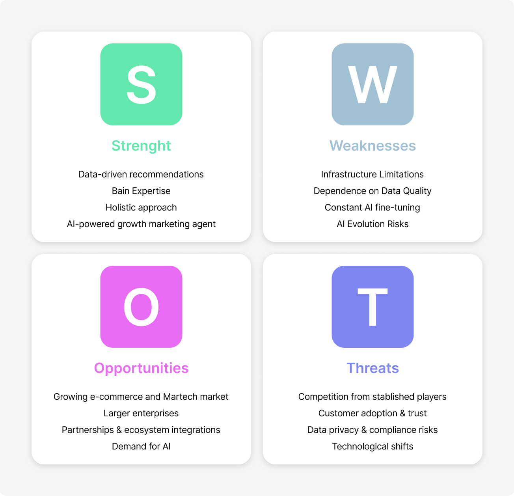
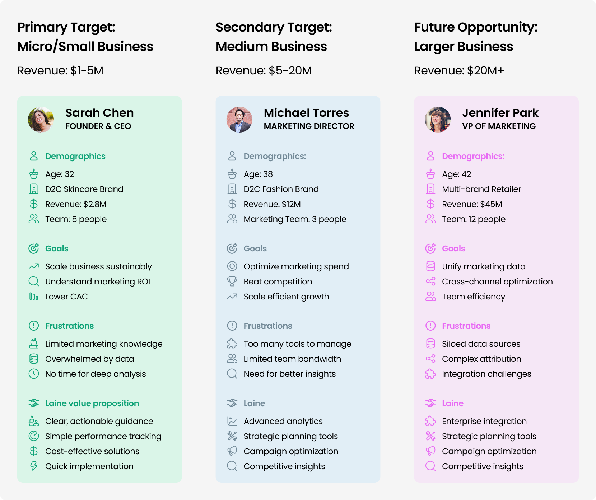
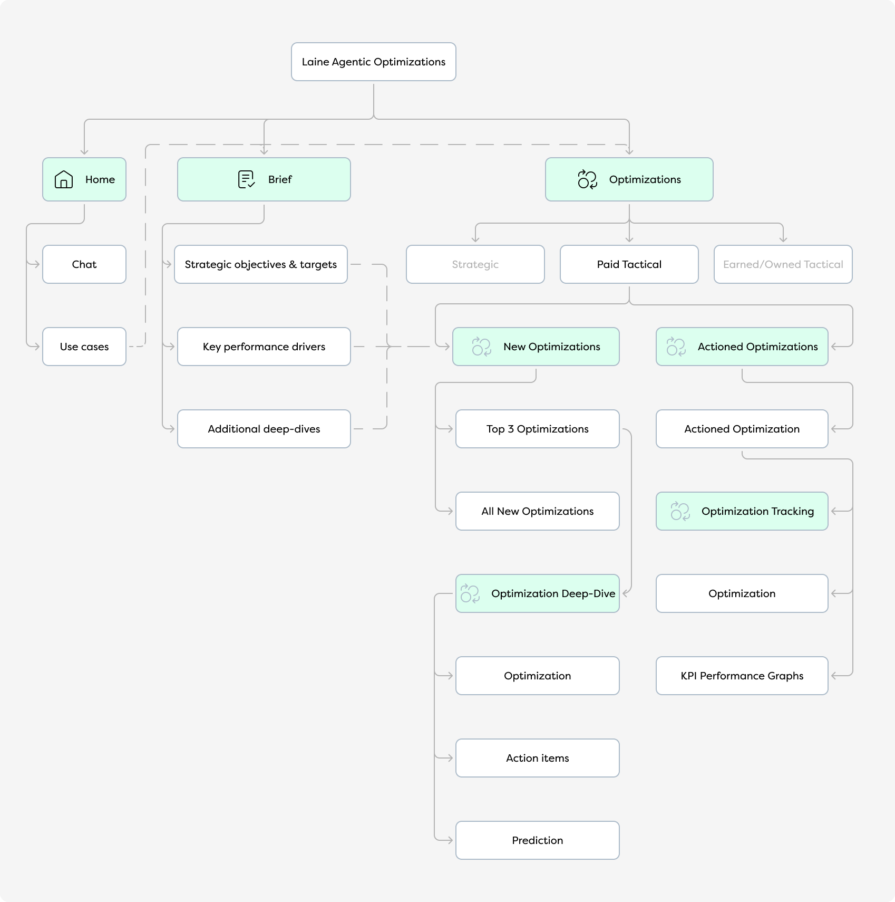
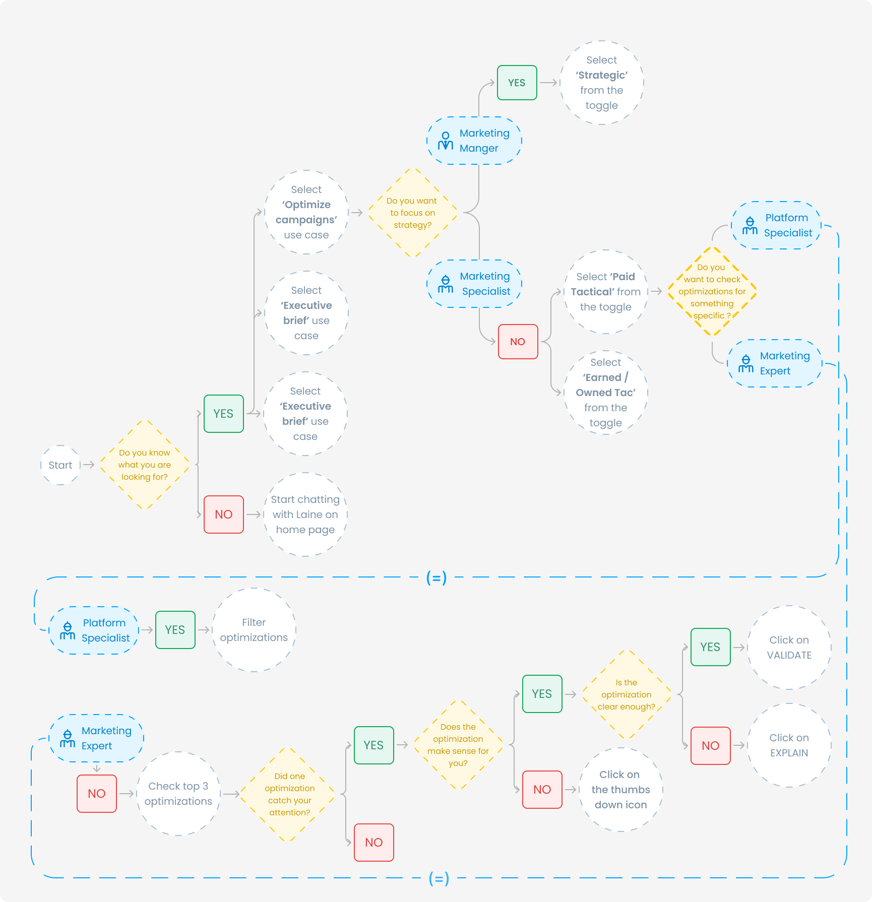

Research & DevelopmentBrandingInformation architectureUIPrototypingSupervising devsUser testingWebflow website
Scroll
Overview
This AI-driven B2B platform helps businesses optimize growth strategies. Developed in Bain & Company's startup incubator, it delivers real-time, actionable insights across marketing, profitability, sales, and customer lifecycle. Unlike traditional tools, Laine automates implementation and continuously refines strategies to drive business growth.
01
Project definition
The concept of Laine arose from the complex challenges faced by businesses in actioning marketing growth strategies that actually work. Through initial context analysis and research, I explored the limitations of traditional marketing analytics. A SWOT analysis alongside a target audience analysis revealed the potential for an intelligent marketing platform that could make strategic insights more actionable and manageable.

SWOT analysis Click to enlarge

Target audience analysis Click to enlarge
02
Information architecture & task flows
Information architecture and task flows were not one-time activities; rather they were revisited several times throughout the iterative process of expanding the platform based on user feedback. Thanks to input from marketing experts, I structured hierarchies that could effectively communicate strategic recommendations. The process involved breaking down intricate marketing metrics into clear, digestible visuals that would resonate with target users.

Information architecture Click to enlarge

Task flows Click to enlarge
03
UI & prototyping
Starting with low-fidelity wireframes and progressively moving to high-fidelity wireframes and demo prototypes, I iterated through multiple versions of the interface to match user needs in the best way possible. User testing played a critical role in refining the interface, ensuring that the AI-driven insights could be trusted, easily understood and acted upon.
 All projects
All projects